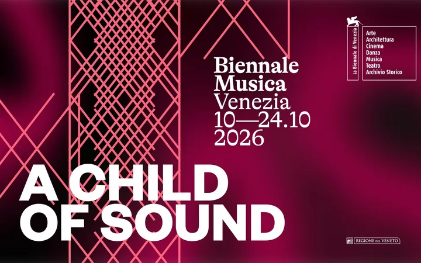

da sab 10 ott a sab 24 ott
Biennale Musica 2026
A Child of Sound è il titolo scelto del 70. Festival Internazionale di Musica Contemporanea in scena a Venezia dal 10 al 24 ottobre , diretto da Caterina Barbieri. Prendendo ispirazione dal bambino di suono come simbolo di rivoluzione e guarigione al contempo, la Biennale Musica…
 Indicazioni
Indicazioni
- Costi e prenotazioni
- Costo non indicato · Prenotazione non indicata
- Programma
- Programma da verificare. Apri la fonte ufficiale per orari e possibili aggiornamenti.
- In caso di maltempo
- Nessuna indicazione specifica pubblicata.
- Note
- Acquisito automaticamente dalla fonte.
L’EVENTO
Descrizione completa
A Child of Sound è il titolo scelto del 70. Festival Internazionale di Musica Contemporanea in scena a Venezia dal 10 al 24 ottobre , diretto da Caterina Barbieri. Prendendo ispirazione dal bambino di suono come simbolo di rivoluzione e guarigione al contempo, la Biennale Musica 2026 , propone un programma di prime assolute e lavori site-specific coinvolgendo alcune delle voci più interessanti e multiformi della musica contemporanea e che attraversa secoli e continenti fondendo tradizione, classico e sperimentale. Il Parco della Musica Contemporanea Ensemble associa la prima esecuzione assoluta di Musica per una fine di Ennio Morricone , lavoro inedito costruito attorno a una poesia di Pier Paolo Pasolini letta dal poeta, a un programma su Johann Sebastian Bach , fra cui il Ricercare a sei voci nella magistrale orchestrazione di Anton Webern , e una commissione a Sarah Davachi che al Festival riceverà il Leone d’argento. Tra gli artisti presenti i Tallis Scholars , da oltre cinquant’anni interpreti del grande repertorio sacro vocale rinascimentale e barocco; Hamadi Hassani, alias Dj Travella, Pili Pili e Jay Mitta protagonisti della scena ipercontemporanea della musica Singeli , nata dall’energia e dalla vitalità della gioventù dei ghetti di Dar el Salam e la zona costiera della Tanzania; Walter Zanetti , alla Biennale con Cantos Yoruba de Cuba un’esplorazione straordinaria della musica sacra afro-cubana e El Decameron Negro che stempera in nuove melodie musica popolare e colta, figurazioni ritmiche, danze e canti rituali; la chitarrista, compositrice e producer danese Marie Luise Buch, in arte ML Buch in forte ascesa per il peculiare sperimentalismo che fonde chitarre elettriche, sintetizzatori ed elettronica; Gigi Masin , veneziano, autore di musica strumentale caratterizzata da un minimalismo personale che incrocia elettronica ed elettroacustica. Pioniere della scena noise giapponese e figura di culto dell’improvvisazione radicale Keiji Haino è Leone d’oro alla carriera . In occasione della Biennale Musica, Haino si esibirà in un concerto site-specific per voce e strumenti a corda e presenterà anche un documentario diretto da Kazuhiro Shirao sulla sua carriera. Altre due icone della musica elettronica giapponese saranno presenti al Festival: Phew , figura pionieristica femminile dell’avanguardia giapponese e Dj Nobu , che farà uno dei suoi leggendari extended djset dedicati alla techno sperimentale a Forte Marghera.
IL PROGRAMMA
Programma e orari
Appuntamenti raccolti dalle fonti elencate. Dove manca un orario, non è ancora disponibile in questa scheda.
Programma pubblicato
- 2026-10-10 — 2026-10-24 ·
INFORMAZIONI UTILI
Prima di partire
- Controllare la fonte prima di partire.
ORGANIZZAZIONE